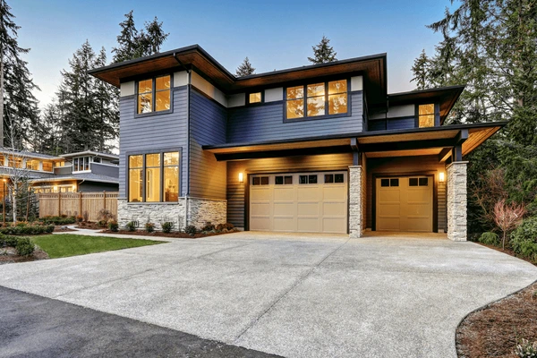

Stark Rentals was founded with a clear mission: to transform the house rental experience by making it more accessible, efficient, and enjoyable for both renters and property owners. We recognize that finding the right home is more than just a transaction—it's about discovering a place where you can truly feel at home. With this understanding, we've developed a platform that seamlessly integrates cutting-edge technology with personalized service, ensuring that the rental process is smooth, transparent, and tailored to individual needs.
In a relatively short time, Stark Rentals has emerged as a leading name in the rental industry. Our success is a reflection of our unwavering commitment to quality and customer satisfaction. We now manage a diverse and growing portfolio of properties, ranging from stylish urban apartments to spacious suburban homes and tranquil countryside retreats. This extensive selection allows us to cater to a wide variety of preferences and lifestyles, ensuring that every client can find a home that suits their needs.
Our dedication to excellence has earned us the trust and loyalty of both renters and property owners. Hundreds of tenants have found their ideal homes through Stark Rentals, with many praising our user-friendly platform, attentive customer service, and the quality of our listings. Property owners, too, rely on us to manage their investments with care and professionalism, knowing that we handle everything from tenant screening to maintenance with the utmost attention to detail. As we continue to grow, our focus remains on providing an exceptional rental experience for all our clients, making Stark Rentals the go-to choice for anyone looking to rent or list a property.